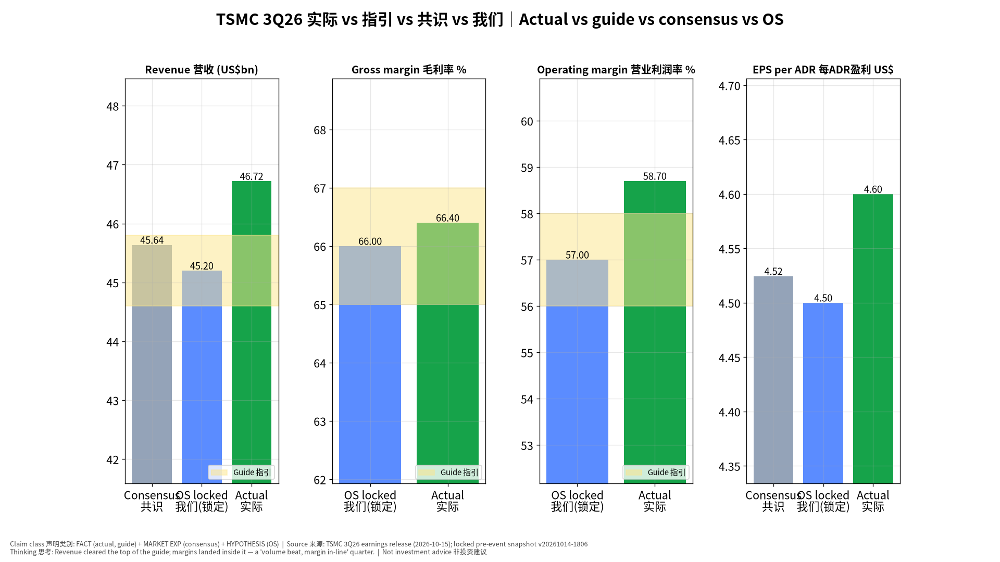
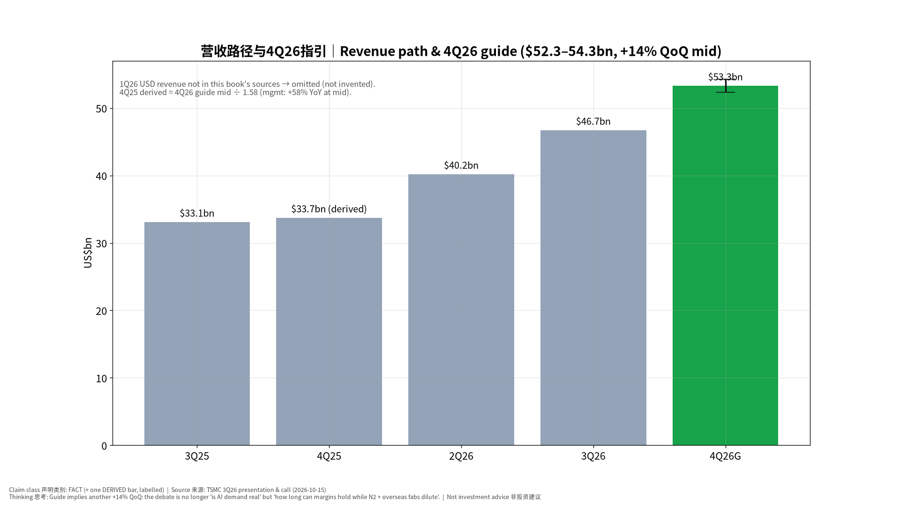
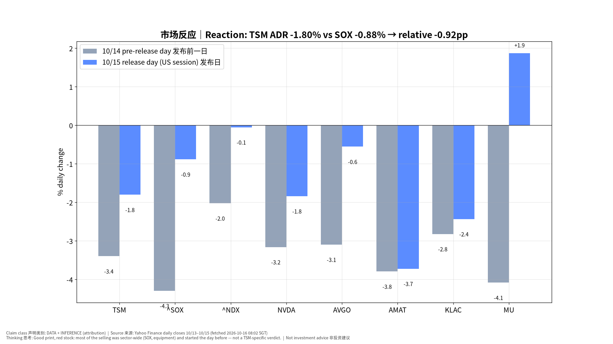
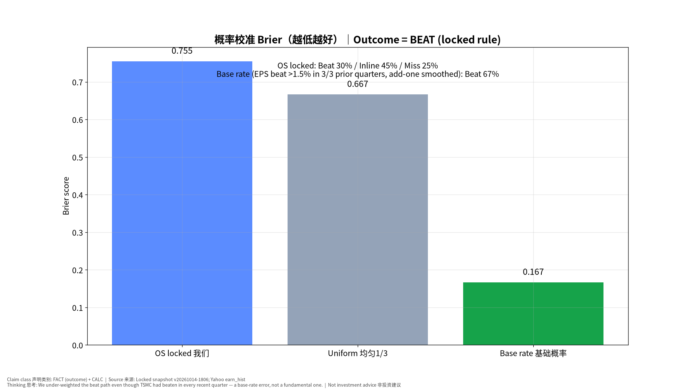
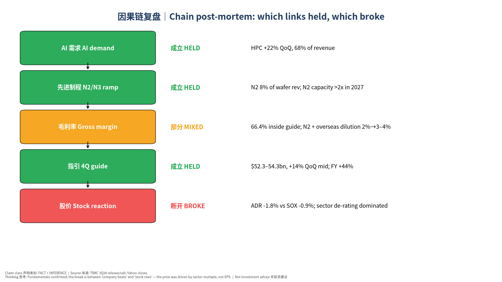

版本 v20261016-0802-post｜生成 2026-10-16 08:02 SGT｜基于锁定的事前书 v20261014-1806（完整性校验通过，未改写）｜财报发布 2026-10-15 约 14:00 台北/新加坡时间｜非投资建议 Not investment advice
⏱ 30秒看懂
🗺 阅读地图
| 你有多少时间 | 读哪里 |
|---|---|
| 2 分钟 | 只看 ⏱30秒 + 图1、图3 |
| 10 分钟 | 加读 §1 实际vs预期、§2 市场反应、§4 我们错在哪 |
| 30 分钟 | 全读，含 §5 估值、§6 对立观点、§7 来源与假设、自我测验 |
层级说明：L1 故事（人人能懂）→ L2 关键数字（带解释）→ L3 专业细节（网页可折叠，默认收起）。
| 指标 | 公司指引 | 共识 (锁定, MARKET EXP) | 我们 (锁定, HYPOTHESIS) | 实际 FACT | 判定 |
|---|---|---|---|---|---|
| 营收 Revenue US$bn | 44.6–45.8 | 45.64 | 45.2 | 46.72 | 高于指引上沿 +0.92 |
| 毛利率 GM % | 65.0–67.0 | — | 66.0 | 66.4 | 指引内（环比 −1.3pp，N2 稀释） |
| 营业利润率 OM % | 56.0–58.0 | — | 57.0 | 58.7 | 高于指引上沿 |
| EPS/ADR US$ | — | 4.52（4.26–4.85） | 4.5 | 4.6 | 比共识 +1.7% |
| 汇率 USD/TWD | 32.0 | 31.98 | 台币略弱，利好台币计价利润 |
其他事实：净利 NT$763.06bn（+68.7% YoY），ROE 45.5%，出货 4476k 片（12寸当量），季度 capex $13.8bn，现金及有价证券约 NT$4.0tn，存货天数 82 天。制程结构：N2 8% / N3 33% / N5 28% / N7 10%，7nm 及以下 79%。平台：HPC 68%（环比 +22%），手机 21%（+10%）。
4Q26 指引（管理层指引 GUIDANCE）：营收 $52.3–54.3bn，毛利率 65–67%，营业利润率 56.5–58.5%，汇率假设 31.8。 电话会要点（GUIDANCE / 管理层表述）： - FY2026 USD revenue growth now ~44% (2026 全年美元营收增长约44%) - 2026 capex reiterated $60–64bn; 2026–28 capex ‘even more significantly higher’ than prior 3 years - AI accelerator CAGR (2024–29, mid-to-high 50s%): ‘probably will be higher’ — no formal update - N2 capacity to more than double in 2027; A14 risk production 2027, volume 2028 - Arizona Fab 2 volume production 3Q27 (slightly ahead); extra 3nm fab in Tainan (1H28) - Overseas-fab GM dilution ~2% now, widening to 3–4% in later years - Consumer / price-sensitive segments challenged by rising component prices → ‘prudent’ 2027 planning - Advanced packaging: 5x reticle in production; 9x and 14x in development; GlobalFoundries interposer deal for back-end shortage

📊 怎么看这张图

📊 怎么看这张图
| 标的 | 10/14 发布前一日 % | 10/15 发布日 % |
|---|---|---|
| TSM | -3.40 | -1.80 |
| ^SOX | -4.30 | -0.88 |
| ^NDX | -2.02 | -0.05 |
| NVDA | -3.16 | -1.84 |
| AVGO | -3.10 | -0.55 |
| AMD | -5.73 | -1.50 |
| AMAT | -3.79 | -3.72 |
| KLAC | -2.82 | -2.43 |
| MU | -4.08 | +1.87 |
| ARM | -6.81 | +2.85 |
| INTC | -4.56 | -2.80 |

📊 怎么看这张图

📊 怎么看这张图
| 环节 | 成立/断开 | 证据 | 学到什么 |
|---|---|---|---|
| AI 需求 | 成立 | HPC 环比 +22%，占比 68%；CEO：需求’远高于供给’ | 需求端信号仍然最强 |
| N2/N3 爬坡 | 成立 | N2 占 8%；2027 年 N2 产能翻倍以上；新增台南 3nm 厂 | 产能扩张=未来 2–3 年营收能见度 |
| 毛利率 | 部分成立 | 66.4% 指引内，但 N2 + 海外厂稀释 2%→3–4% | 利润率是下一阶段的主要争议 |
| 指引 | 成立 | 4Q +14% QoQ；全年 +44% | 与共识 2026 全年 +44.9%（TWD）基本一致 → 已被定价 |
| 股价 | 断开 | ADR -1.8%，SOX -0.9%，AMAT -3.7% | 板块估值 > 单季成绩；事前证伪条件 #1（Beat 但跌 >3%）未触发（跌幅 <3%），但方向一致 |
错误分类：①概率校准错误（主要）②市场反应错误（次要：事前 Beat 剧本预期 ADR +3~+7%，实际 -1.8%）。根因：忽视了 10/13–10/14 半导体板块已在去拥挤（AMAT 两日 -10.2%），个股成绩难以对抗板块资金流。逻辑修正：财报剧本要加入’板块动量/拥挤度’条件，Beat 剧本拆为’Beat+板块顺风’和’Beat+板块逆风’。

我们的观点：台积电基本面持续超预期，股价下跌主要是板块估值收缩，中期价值未受损。
对立观点最强版本： 1. 营收超预期已经是’惯例’，市场早已按’超上沿’定价，所以这不是真正的惊喜。 2. 毛利率连续两季环比下滑（67.7%→66.4%→指引中值66%），N2 与海外厂稀释可能持续多年，‘量增利减’会压低估值倍数。 3. 2026–28 capex 大幅上升 + 设备涨价，意味着自由现金流转化率下降；如果 AI 需求在 2027 年放缓，产能将过剩。 4. CEO 承认消费类需求受零部件涨价冲击，2027 规划’审慎’。
| 证据 | 支持我们 | 支持对立 | 权重 |
|---|---|---|---|
| 营收高于指引上沿 $0.9bn | ✔ | 中 | |
| 毛利率环比 −1.3pp | ✔ | 中 | |
| 4Q 指引中值 +14% QoQ | ✔ | 高 | |
| 全年 +44% ≈ 共识 +44.9% | ✔ | 高 | |
| capex 2026–28 显著上升 | ✔ | ✔ | 中 |
| 发布日 ADR 跑输 SOX | ✔ | 低（一天噪音大） |
裁判：证据双方都有；’基本面强’成立，但’这些已经被定价’同样成立。我们维持基本面判断，但承认短期股价由板块与毛利率路径决定。
| 项目 | 来源 | 类别 | 时间 |
|---|---|---|---|
| 3Q26 实际、4Q26 指引 | TSMC 3Q26 Earnings Release；SEC 6-K | FACT | 2026-10-15 |
| 制程/平台结构、汇率、出货 | TSMC 3Q26 Presentation | FACT | 2026-10-15 |
| 电话会表述 | Motley Fool transcript | GUIDANCE（管理层表述） | 2026-10-15 |
| 事前共识/我们的预测 | 锁定快照 v20261014-1806（Yahoo co_TSM 2026-10-14） | MARKET EXP / HYPOTHESIS | 2026-10-14 18:06 SGT |
| 股价 | Yahoo Finance 日收盘（yfinance） | DATA | 抓取 2026-10-16 08:02 SGT |
| EPS 超预期历史 | Yahoo earn_hist | DATA | 抓取 2026-10-16 08:02 SGT |
| # | 假设 | 类型 | 检验/失效条件 |
|---|---|---|---|
| 1 | 4Q 营收落在指引内 | GUIDANCE | 1 月财报；月营收 |
| 2 | 毛利率稀释（N2+海外）≤ 管理层口径 | HYPOTHESIS | 4Q GM < 65% 即失效 |
| 3 | 发布日 ADR 下跌主要由板块驱动 | INFERENCE | 若 2330 今日也明显跑输台股大盘则失效 |
| 4 | 4Q25 美元营收 = 指引中值 ÷ 1.58（推导） | DERIVED | 用公司年报数字替换 |
| 5 | Beat 基础概率 ≈ 历史 EPS 超预期频率 | HYPOTHESIS | 样本仅 3 季，需扩充 |
构建脚本 pipeline/build_tsm_post.py；事前快照
v20261014-1806（只读）；Excel
含实时公式（记分卡、Brier、反应、全年营收推算）；公司模型
research/companies/TSM/ 最新版由
build_companies.py 生成。
✅ 自我测验 Check your understanding
答案：当天整个半导体板块和设备股都在跌，TSM 跑输 SOX 不到 1 个百分点——板块估值收缩压过了单季成绩；而且’超指引’对台积电已是常态，部分已被定价。
答案：结果是 Beat，我们只给了 Beat 30%。台积电近几季几乎每季超预期，我们没用基础概率。
答案：因为方向在下滑（67.7%→66.4%→66%），且管理层说海外厂稀释会扩大到 3–4%：营收增长的同时每一美元赚得更少。
✍ 事后作业：打开 Excel ‘FY2026_Bridge’ 表，把第四季营收改成指引下沿 52.3，看看全年增长和与共识的差距怎么变。
如果明天台股 2330 大涨、而 SOX 继续跌，我们的’板块驱动’解释是否还成立？——是的，这正好说明 TSM 自身的成绩在被单独认可；真正推翻我们的是：2330 同样大幅跑输台股大盘。